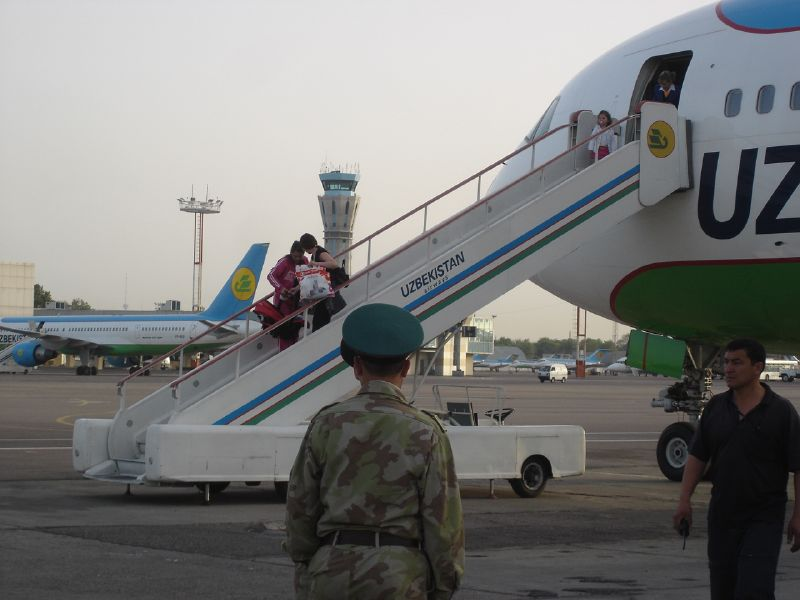

Как устроена трудовая миграция: правила для России, Кореи и Европы
Пояснительная справка о трёх основных легальных путях для узбекских трудовых мигрантов — патентной системе России, программе EPS Южной Кореи и организованном наборе: как они устроены, их правила и цифры.

Значительная часть граждан Узбекистана работает за рубежом, а денежные переводы, которые они отправляют домой, составляют важную долю доходов домохозяйств. Это не однодневная новость, а система. Ниже — основанное на фактах объяснение трёх основных легальных путей трудовой миграции: патента в России, программы EPS в Южной Корее и организованного набора из Узбекистана — как каждый из них работает и какими правилами регулируется.
Россия: патентная система
Граждане государств — членов Евразийского экономического союза (ЕАЭС) — Армении, Беларуси, Казахстана и Кыргызстана — могут работать в России без патента и разрешения на работу. Узбекистан не является полноправным членом, а имеет статус наблюдателя, поэтому граждане Узбекистана обязаны получать патент для работы.
Мигрант, въехавший без визы, обычно должен оформить патент в течение 30 дней после прибытия. Действие патента привязано к ежемесячному авансовому платежу по налогу на доходы физических лиц (НДФЛ): пропуск платежа аннулирует патент. В Москве этот ежемесячный платёж составил 8 900 рублей с 1 января 2025 года и 10 000 рублей с января 2026 года; сумма различается по регионам.
Для получения патента мигрант должен сдать экзамен по русскому языку, истории России и основам законодательства, купить медицинскую страховку и получить идентификационный номер налогоплательщика (ИНН). Экзамен можно сдать в аккредитованных центрах в России и за рубежом, в том числе в Ташкенте.
5 февраля 2025 года в России заработал «реестр контролируемых лиц». В него вносят иностранцев без законных оснований для пребывания; реестр доступен для публичного поиска, а включённые в него сталкиваются с ограничениями на банковские операции, транспорт и регистрацию имущества, а при повторных нарушениях — с депортацией.
- Узбекистан не является полноправным членом ЕАЭС — патент обязателен
- Патент: оформляется в течение 30 дней после прибытия
- Ежемесячный платёж в Москве: 8 900 рублей (2025) → 10 000 рублей (2026)
- Требования: экзамен по русскому языку/истории/праву, медстраховка, ИНН
- 5 февраля 2025 года: запущен «реестр контролируемых лиц»
Южная Корея: EPS (Система разрешений на трудоустройство)
EPS — межправительственная программа, по которой работники въезжают по визе E-9. В ней участвуют 16 стран-партнёров, включая Узбекистан, а администрирует её Служба развития человеческих ресурсов Кореи (HRD Korea). Кандидат сначала должен сдать экзамен по корейскому языку EPS-TOPIK.
Трудовой договор заключается первоначально на 3 года и по запросу работодателя может быть продлён в общей сложности до 4 лет и 10 месяцев. Разрешённые сферы: производство, строительство, сельское хозяйство и животноводство, рыболовство, судостроение, а с 2024 года — отдельные направления услуг. Годовые квоты устанавливает правительство, и они меняются: 69 000 в 2022 году, 165 000 в 2024 году и снижение до 80 000 в 2026 году.
Организованный набор и европейское направление
В Узбекистане действует государственный механизм организации внешней трудовой миграции. Агентство по миграции координирует организованный набор, проводит бесплатные курсы предвыездной подготовки (правовая грамотность, безопасность, правила договоров и виз, культурная адаптация) и поддерживает мигрантов через медосмотры и адаптационные центры.
На европейском направлении Узбекистан заключает соглашения по квалифицированным кадрам. 15 сентября 2024 года в Самарканде было подписано соглашение о миграции и мобильности с Германией, а 7 апреля 2025 года — трёхсторонний меморандум. Дефицит кадров в Германии к концу 2024 года превысил 1,4 миллиона незанятых рабочих мест.
В цифрах: денежные переводы
- Всего переводов в 2024 году: 14,8 млрд долларов (+29,8%)
- Доля России: 11,5 млрд долларов (~77%)
- Другие источники (2024): Казахстан 795 млн, США 577 млн, Корея 534 млн, Турция 405 млн долларов
- Доля в ВВП: ~14%
- Всемирный банк: без переводов уровень бедности был бы 16,8%, а не 9,6%
По данным Всемирного банка, денежные переводы из-за рубежа существенно снижают бедность в Узбекистане: без этого источника дохода уровень бедности составил бы 16,8 процента вместо 9,6. Это официальный показатель того, насколько трудовая миграция важна для экономики страны.
Важное уточнение
Ежемесячная плата за патент, квоты EPS в Корее и некоторые правила меняются почти каждый год — приведённые выше цифры отражают ситуацию 2025–2026 годов. Для точной и актуальной информации всегда следует обращаться к официальным источникам (Агентство по миграции Узбекистана, HRD Korea, МВД России). Это справка, а не срочная новость.